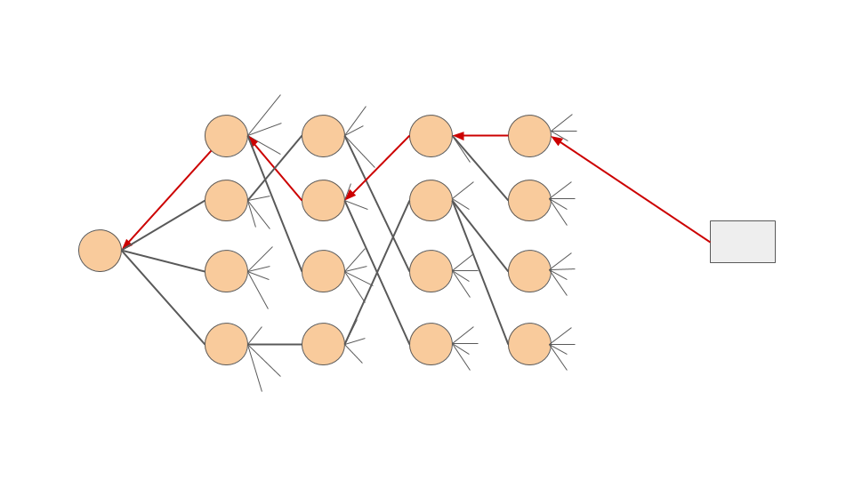

Analysis Tools¶
You have at your disposal several tools to analyse FragPELE simulations. Go into the following path to have access to all of them:
cd frag_pele/Analysis
Backtracking trajectories¶
FragPELE follows a clustering strategy that connects several simulations, redistributing the initial structures at each growing step. Therefore, the traceback between snapshots is lost along with the simulation procedure. For this reason, we have modified an AdaptivePELE’s tool to do the backtracking of snapshots, to get all of them from the selected final structure to the initial one.
usage:
backtrackFragTrajectory.py [-h] [-p P] [-o O] [--name NAME] file_to_backtrack
Positional arguments:¶
- file_to_backtrack: File of the selected_results folder that one’s wants to backtrack.
Optional arguments:¶
- -p: Path to the folder that contains the growing results (all growing simulations). By default: “growing_results”.
- -o: Output path where the traceback trajectory will be written. By default it writes the file in the current directory.
- —name*: Name of the output pdb file. By default “pathway.pdb”.
i.e:
python frag_pele/Analysis/backtrackFragFrajectory.py selected_result_aminoC1N1/epochsampling_result_aminoC1N1_trajectory_1.1_BindingEnergy-47.6974.pdb
** It is important to do not change the name of the files inside the selected_results folder, because it is used to do the traceback. **
{kind=link}
Backtracking connectivity¶
As a consequence of the connection between the fragment and the core FragPELE outputs lose the connectivity part of the PDB file. Thus, all bonds will be interpreted as single type. Prepare with Maestro one of the selected results’ structure and use this script to recover the connectivity in the rest of the trajectory
usage:
backtrackConnectivity.py [-h] [--ligand_chain LIGAND_CHAIN] [-o O] pathway pdb_with_connects
Positional arguments:¶
- pathway: Trajectory file with the backtracked pathway. It expects the output of backtrackFragTrajectory.py
- pdb_with_connects: PDB of the final structure prepared. Must contain CONNECTS section. Remember to not delete water molecules!
Optional arguments:¶
- -o: Output file of the new trajectory. By default it has the input pathway name with “_connected.pdb” added.
- —ligand_chain*: Name of the ligand chain. By default “L”.
i.e:
python frag_pele/AnalysisbacktrackConnectivity.py pathway.pdb epochsampling_result_aminoC1N1_trajectory_1.1_BindingEnergy-47.6974_with_connects.pdb
Analyser¶
Computes the mean of the 25% lowest values of the sampling simulation for each fragment grown: FragPELE SCORE.
usage:
analyser.py [-h] [-r REP_PREF] [-s STEPS] [-f FILE] [-o OUT] [-e EQUIL_FOLDER] [-c COL] [-q QUART] [-csv EXPORT_CSV] path_to_analyze
Positional arguments:¶
- path_to_analyze: Path of the folder to be analyzed, where all simulations are stored. Is the directory where you have run FragPELE.
Optional arguments:¶
- -r, —rep_pref: Prefix to the report files. By default “report*”.
- -s, —steps: Used to compute the score only with the first N steps of the sampling simulation.
- -f, —file: Flag to export to files. By default “False”.
- -o, —out : Name of the output file. By default “None”.
- -e, —equil_folder: Prefix of the sampling folder (where the results are stored). By default: “sampling_results*”.
- -c, —col: Name of the column that we will use to find the minimum value of the PELE report. By default “Binding Energy”.
- -q, —quart: Quartile that will be used to subset the whole sample to compute the mean then. By default 0.25.
- -csv, —export_csv: Flag to export all results to a csv file. Set this flag to “False” if you do not want to store them. By default “True”.